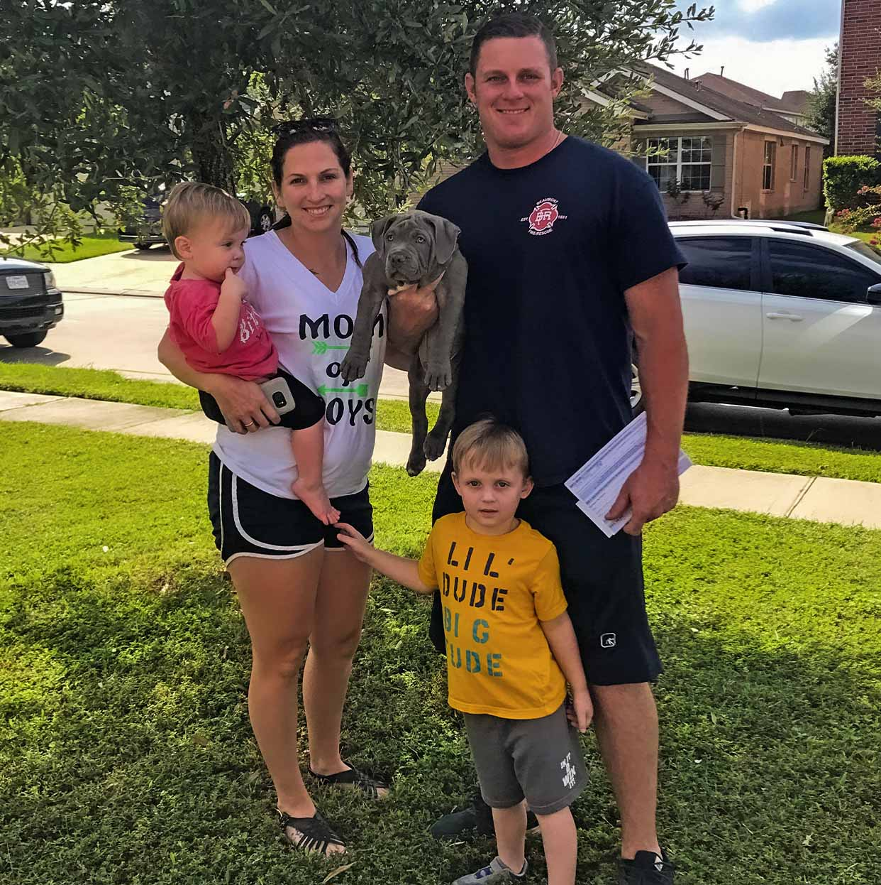
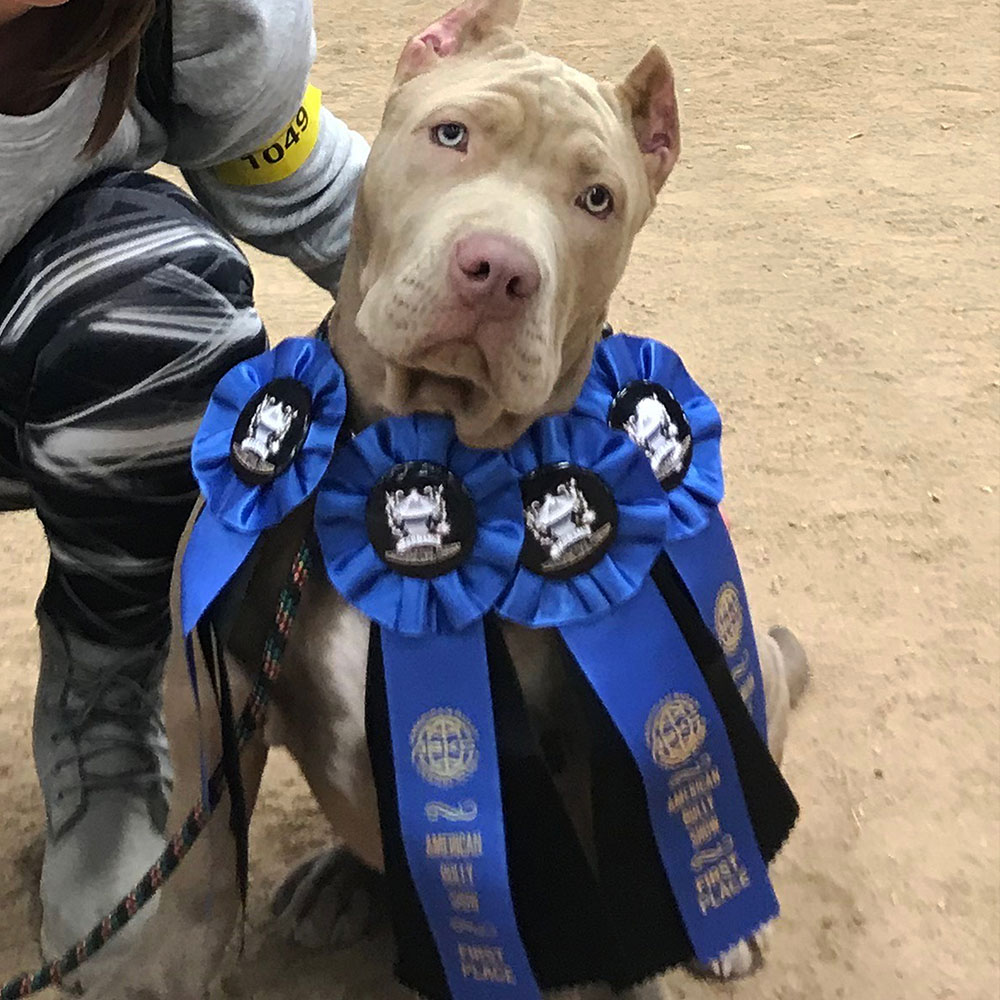
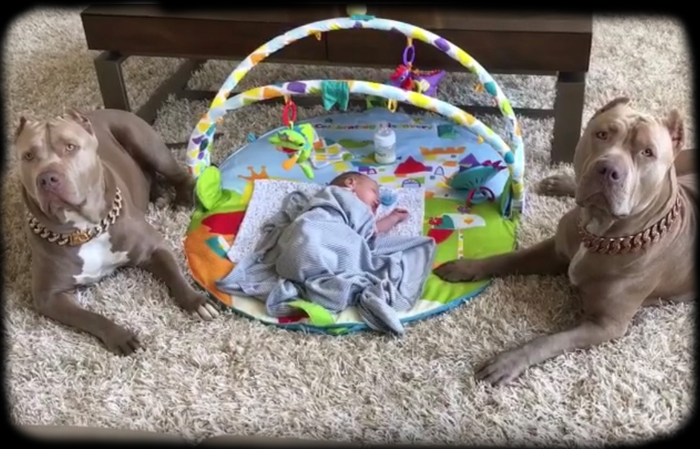
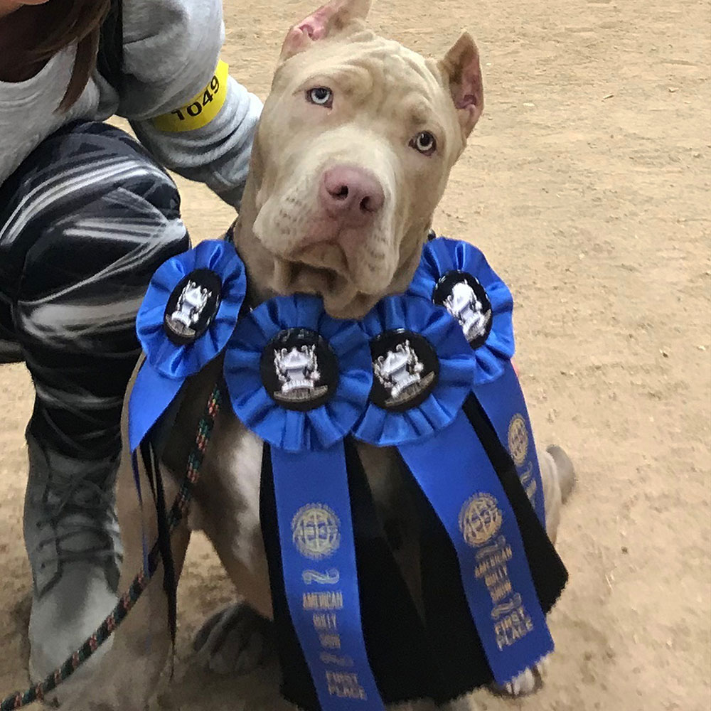
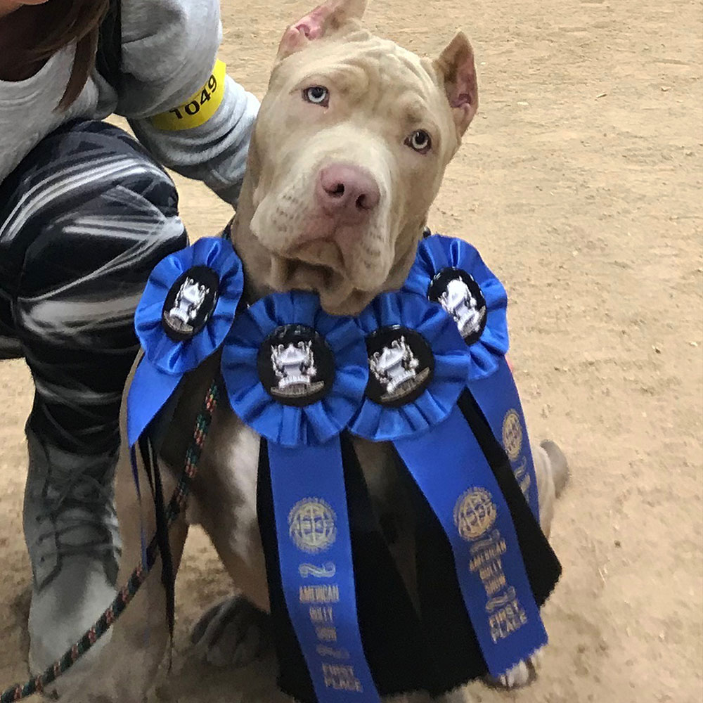

Welcome to the XL Bully Home where our dogs are family. We specialize in breeding XL/XXL American Bullies.
We are known for the world famous two-faced Merle american bully, Phantom. Our dogs are the best family dogs, amazing
temperament with infants, children and adults. Our productions are known to have quality, size, structure and
beautiful colors. Let a XL Bully join your family today!
As dog owners, we understand that our dog is not just our companion or best friend but also part of the
family. It is without saying that you cannot find a true friend and companion from any dick and harry but from
a trusted dog breeder and seller such as XL Bully Home . At XL Bully Home, we breed and sell the best and high-quality
American Bully breeds. When it comes to choosing the right American Bully for you, XL Bully Home is the place to seek.
At XL Bully Home, we offer the best of both XL and XXL American Bullies of different colors from brown, black,
white, blue, fawn, ticking, brindle, lilac-tri, chocolate, to champagne. As the name suggests, the XL American
Bully is a bit smaller than the XXL. Also, you can acquire Gold and Diamond Chains and Leashes customized specially
for bullies by visiting XL Bully Home. If you are seeking to buy an American Bully, you can always count on XL Bully Home . To choose your dream dog,
visit our instagram page.
What Our Customers Are Saying About Us
THANK YOU XL BULLY HOME FOR THIS BEAUTIFUL PUPPY, MY FAMILY LOVES HER! Maurkice Pouncey
CONGRATS TO NFL STAR MAURKICE POUNCEY FORMER AMERICAN FOOTBALL CENTER WHO PLAYED 11 SEASONS FOR THE PITTSBURGH STEELERS OF THE NATIONAL FOOTBALL LEAGUE (NFL) ON YOUR BEAUTIFUL PHANTOM DAUGHTER! SO GLAD WE COULD BRING YOUR PUPPY TO MEET YOU IN PERSON. THANK YOU SO MUCH MARKICE AND GOOD LUCK ON THIS UPCOMING SEASON!!!
He was worth every dime. Pups gonna be Krazy Stephen Jackson
I WOULD LIKE TO WELCOME AMERICAN FORMER PROFESSIONAL BASKETBALL PLAYER WHO PLAYED 14 SEASONS IN THE NATIONALBASKETBALL ASSOCIATION WITH THE NEW JERSEY NETS, ATLANTA HAWKS, INDIANA PACERS, GOLDEN STATE WARRIORS, MILWAUKEE BUCKS,CHARLOTTE BOBCATS, SAN ANTONIO SPURS, AND LOS ANGELES CLIPPERS TO THE XL BULLY HOME FAMILY. HAND DELIVERED HIS NEWEST FAMILY MEMBER BABY XL BULLY "DOLPH" TO HIS BEAUTIFUL HOME IN GEORGIA. STEPHEN IT WAS AN ABSOLUTE PLEASURE MEETING YOU. THANK YOU FOR UPDATES, YOUR PUPPY IS HUGE 110 LB IN 8 MONTH OLD!!!
Thank you XL Bully Home for great customer service! My kids so happy with new family member! Marquis Haynes
ANOTHER VERY HAPPY NFL SUPERSTAR! WE WOULD LIKE TO EXTEND A HUGE WARM WELCOME TO AN AMERICAN FOOTBALL DEFENSIVE END WITH THE CAROLINA PANTHERS OF THE NATIONAL FOOTBALL LEAGUE (NFL). WE HAPPY THAT YOUR FAMILY ENJOY YOUR PUP. THANK YOU FOR CHOOSING XL BULLY HOME!
What Our Customers Are Saying About Us
Big Thank you to XL Bully Home for personal deliveryVogue All the way from Washington to The UK. Our family
are Delighted with her! Sophie
Great people, they go above and beyond for their customers and treat their pups like family. I purchased my
baby girl Eva from them and she was worth every penny! Adrian Santos
Very nice guys! They take care of dogs very professionally, they helped me a lot. It was very pleasant to
talk with them and definitely want to buy a puppy from them!!! Thank you! Nick D

XL Bully Home are above and beyond great!!
You will not find nicer people who stay in touch, wonder how
the pups are doing and growing, and are there to answer any and EVERY question you could come up with. The
hours and dedication they put into the pups from birth til when they go home with you is outstanding.
I have
never laid hands on pups as healthy and well started as the litter I got my boy out of. I would HIGHLY recommend
doing buisness with XL Bully Home. You will not be disappointed.
I will certainly get another pup from them! Justin Poiencot
You will not find a better kennel to get your xl bully from! The owners treat all the pups like they're
own babies! My husband and I bought our sweet Luna from them and we couldn't ask for a better pup! She's
playful, cuddly, loving, well behaved and not to mention the cutest thing ever! We love her so much!! Abby Barber
Can't wait to see my little baby pitbull! I talked to Yulia, she answered all my questions, was really
nice and knowledgeable. And now I paid the deposit and just waiting for my cutie to meet. I know they are
treating their dogs really well, because I was following them for a long time. I can recommend XL Bully Home to my
friends and other people who would want to get healthy puppy pitbulls. Anastasia A
By the far the best kennel out there. We got our baby drogo from there and he couldn’t be more of a blessing.
If you’re looking for a sweet, and beautiful puppy make sure you got it from them. They’re very knowledgeable
and treat all the puppies as their own. Fady Elaiwat
Purchased my beautiful Xl bullie from XL Bully Home and I absolutely have to say that Yulia and
her husband are the most loving, nicest people I have ever met, they know exactly what they
are doing in this business they love and care for thier pets as if they are family! Always willing to answer
questions Very informative And go above and beyond! Believe me you wont dissapointed in perchasing a pup
from them♡ RinaHeart
XXL American Bully/Pitbull puppies for sale from XL Bully Home are very famous in the world. We are top class
breeders dedicated to produce the best american bully puppies on Earth. XL Bully Home is happy to offer healthy
and strong pitbull american bully puppies from the best XXL pitbull / american bully bloodlines. You can buy
Lilac tri pitbulls, blue pitbulls, champagne pitbulls, black pitbulls, chocolate pitbulls, merle pitbulls,
blue nose pitbulls. American bully pitbull puppies from XL Bully Home have the best XXL Pitbullblood in them with
the best family temperament. All puppies from XL Bully Home are muscular, strong, athletic, loyal and extremely friendly with kids.

XXL/XL Pitbull Bully puppies
In 2020 - 2021 we are going to offer a huge variety of healthy and strong XL AMERICAN PITBULL BULLY PUPPIES for sale that come with amazing family temperament and the best bloodlines. We breed Pitbull Bully Dogs with most unique colors: Merle bullies, Tri Pit bulls, Fawn pit bulls, red nose pit bull puppies and blue nose pit bulls for sale. We raise our pit bull puppies with extra care to make them strong athletic with gentle family temperament and extremely loving PITBULL puppies. If you are looking for huge xl pitbull puppy companion for a years, best puppy friend for your kids and going to add bully puppy with the best pedigree to your family you are in the right place now! Our pitbulls puppy are nothing short of greatness. XL Bully Home is not regular pitbull breeder, our dogs are family and we take extra care of each our bully pitbull here in our house. We work hard to produce the best pitbull family dogs and pitbull puppies for sale and provide worldwide shipping.
Our Pitbull American Bully Dogs
Temperament
American Pitbull Terriers/American Bully descended from extremely
people-oriented breeds. These dogs are very affectionate, even clingy. Despite their forbidding exterior,
American bully /pitbull are soft-hearted, enjoy affection and interacting with humans. These dogs love
the entire family rather than just one person and are known to adore children.
American Bullies / Pit bulls have a high tolerance of pain and are able to withstand roughness and even pain
inflicted by children. They rarely snarl and never bite. At the same time, they know that children are their
tireless playmates and best friends. As is the case with other breeds, correct socialization is key for normal
interaction between these dogs and children.
Bullies and Pitbulls strangers well, as aggressiveness was a highly undesirable trait for their ancestors. If
raised correctly, they are friendly and well-mannered. Some individual dogs may be wary and distrustful, but
friendly animals who regard strangers as potential friends constitute the vast majority of the breed. However,
they still need to undergo training, as these dogs’ physical strength makes them unmanageable in a hostile
situation.
American Pit-bull Terriers / American Bully have natural protective instinct but are calm. They may make
acceptable watch dogs, but are not sufficiently aggressive for this purpose. However, they don’t really need to
be aggressive, as their looks are often deterring enough.
XXL/XL American bully puppies produced by XL Bully Home Inc
Most of our customers decide on getting an American Bully based on different factors. For some, the highly
muscular bullies that we breed is enough for them to decide to buy while others are enticed by the gameness
and the level of friendliness and companionship they were bred to offer. Even though American Bullies are
descendants of pit bulls and terriers that were used during the cruel dogfighting era, their aggressiveness
has been diluted and reduced over time through selective breeding. The bullies that we sell were bred right
here at XL Bully Home to attain the most friendly dog. At XL Bully Home , we have been working extra hard to
ensure only the bullies with the best traits are used for breeding. You can rest assured that any American
Bully you buy from XL Bully Home will exceed your expectations.
Some of our customers chose to buy American Bullies bred at XL Bully Home based on our reputation and experience
in breeding high-quality companion bullies. We selectively breed all bullies by pairing well-behaved dogs to
ensure you acquire a bully that is much easier to raise. Even though all breeds require some effort to raise,
hair-grooming an American Bully is less intensive compared to some of the other breeds since its hair is shorter.
Our American Bullies are intelligent, quick learners, and people-pleasers, making them much easier to train.
Also, they are energetic and require regular exercise since they come from a long line of working dogs and have
retained an abundance of energy from their ancestors. If you love jogging with your dog, buying an energetic
American bully from XL Bully Home is the right decision.
For companionship, XXL Bully Home ’ American Bullies were selectively bred to increase the level of compassion
and friendliness. Although the XL and XXL are big American Bullies, most families who visit XL Bully Home are
surprised by how much their children love to play and run around with them. There have been situations where
different members of the same family became strongly attached to different bullies forcing them to go home
with both even though they had planned to buy only one.


 
